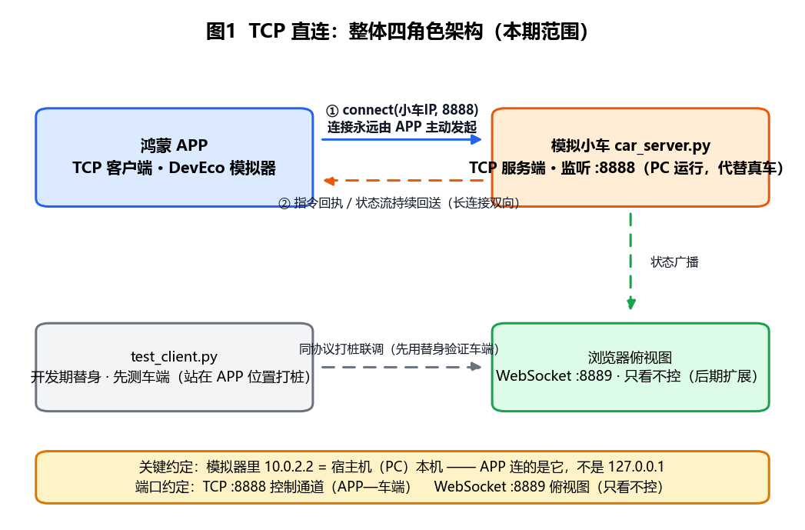
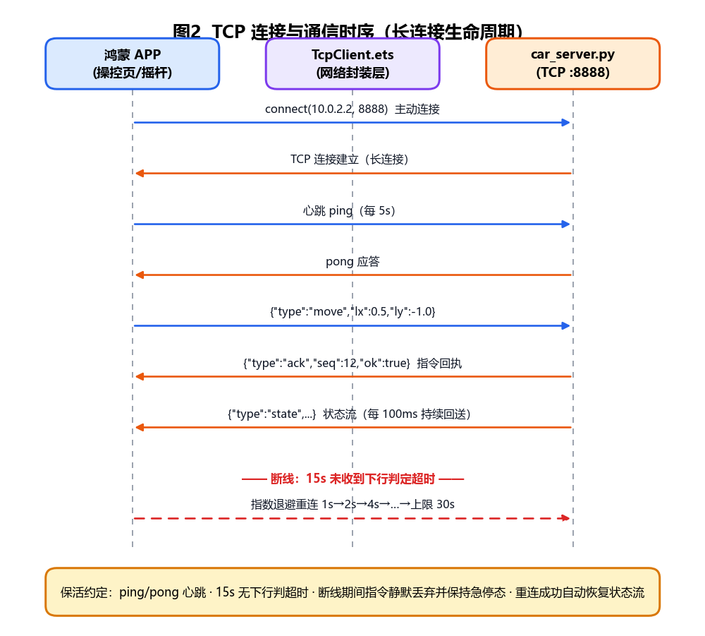
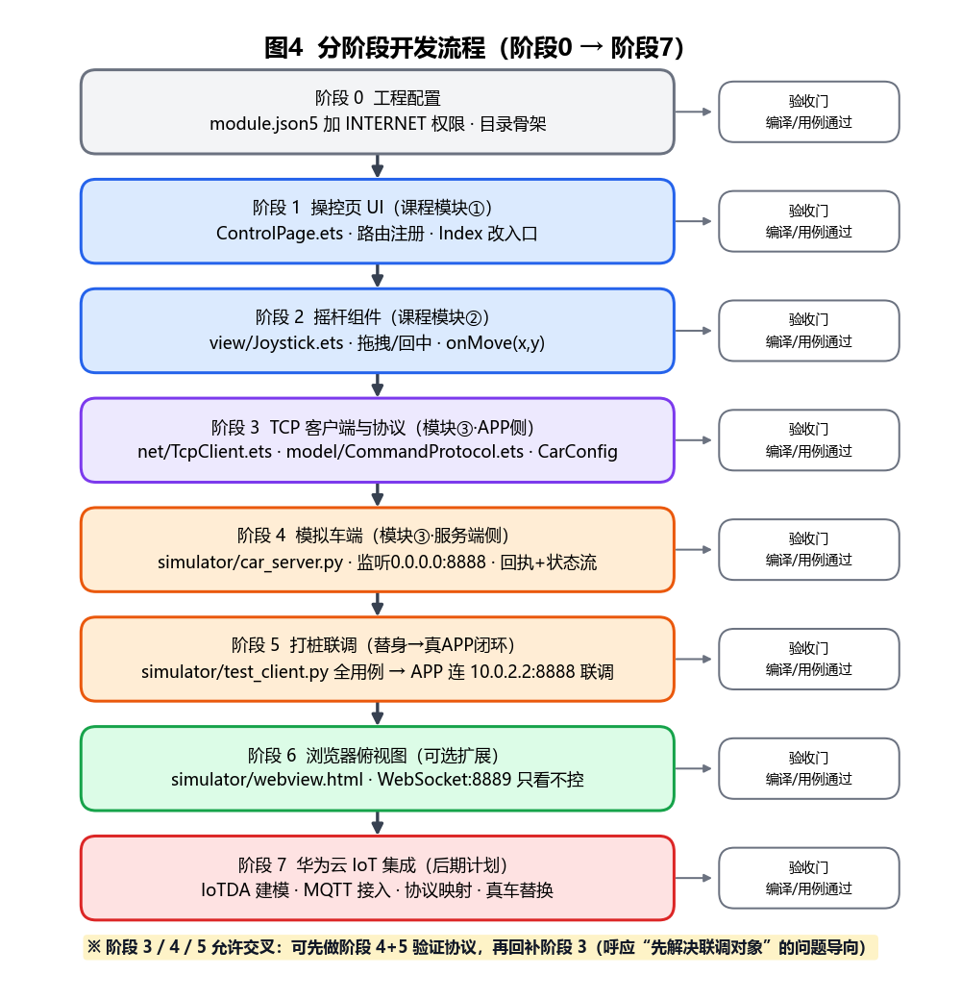
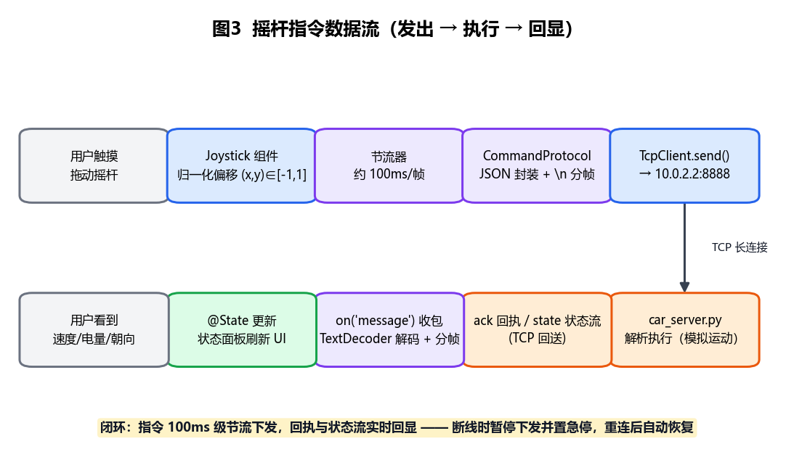
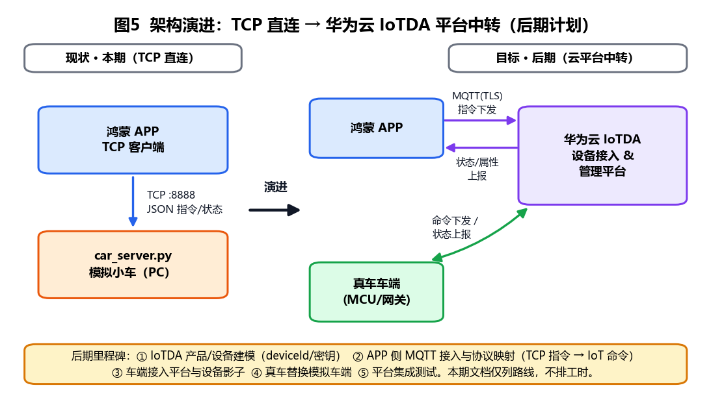

微课程 · 项目开发计划
全场景智能寻检车 APP 开发实战
项目开发计划书
TCP 直连模拟 · 从操控 UI 到通信闭环
本文档是《全场景智能寻检车 APP 开发实战》微课项目的完整开发计划。本期核心目标：在没有真车的情况下，以 TCP 直连模拟方式跑通"鸿蒙 APP（客户端）与 PC 模拟小车（服务端）"的完整控制闭环，覆盖课程前三个模块（操控页 UI、摇杆组件、TCP 通信）；华为云物联网平台集成作为后期扩展列入路线图。文档遵循"背景阐述 → 资源盘点 → 带着问题和方向推进"的叙事主线，给出总体架构、八个阶段的开发计划、关键技术方案、测试验收方案与风险应对。
《全场景智能寻检车 APP 开发实战》是一门聚焦智能设备 APP 开发的微课程，围绕一台智能寻检车的手机端操控应用展开，包含四大技术模块：
| 模块 | 内容 | 本期范围 |
|---|---|---|
| 模块① | 操控页面 UI 设计与实现（常用 UI 组件、样式定制、触摸事件） | 本期实施 |
| 模块② | 摇杆设计与开发（组件剖析、交互逻辑、集成实验） | 本期实施 |
| 模块③ | TCP 网络通信（原理、实现方法、通信功能测试） | 本期实施 |
| 模块④ | 华为云物联网平台集成（基础操作、协议解析、平台与车端交互） | 后期计划 |
寻检车 APP 的最终形态是"手机 APP 通过网络控制真车"。但在课程第一阶段，真车硬件尚未到位。若等真车到手才开始开发，UI、通信协议、联调问题会全部堆积到后期。解决方案是老师第一阶段指示的模拟小车思路：在 PC 上运行一个 Python 编写的模拟车端服务程序，持续监听固定端口，代替真车接受 APP 连接——这样 APP 侧的全部开发（UI、摇杆、通信、协议）都可以先行开展，后期仅需把"模拟车端"替换为"真车车端"，APP 代码几乎无需改动。
老师给出的 TCP 直连实验方式包含四个角色与两条关键约定：
约定一：连接永远由 APP 主动发起，connect(小车IP, 8888)，以长连接形式维持；约定二：模拟器环境中 10.0.2.2 等价于宿主机（PC）本机——APP 连接的是它，而不是 127.0.0.1。
| 资源 | 状态 | 说明 |
|---|---|---|
| DevEco Studio | 已安装 | 安装路径 D:\Program Files\Huawei\DevEco Studio\bin |
| HarmonyOS 手机模拟器 | 已安装 | 可运行 API 22 应用 |
| Python 3.x（PC） | 可用 | 用于模拟车端与打桩客户端 |
| 鸿蒙开发经验 | 已具备 | 熟悉 ArkTS 声明式 UI 与工程结构 |
| 真车硬件 | 未到位 | 以 PC 模拟车端替代（本期核心策略） |
当前工程 D:\hong_meng\carctrlcloud2 为全新 HarmonyOS NEXT 模板工程，核查结论如下：
| 项目 | 现状 |
|---|---|
| 工程模型 / SDK | Stage 模型，compatibleSdkVersion = 6.0.2(22)（API 22） |
| 包名 | com.Nox7th.carctrlcloud |
| 设备类型 | 仅 phone |
| 已有代码 | EntryAbility.ets（入口）、pages/Index.ets（Hello World 占位页）、EntryBackupAbility.ets（备份扩展） |
| 已有配置 | 页面路由表仅含 pages/Index；依赖仅为测试框架（hypium/hamock） |
| 缺失项 | INTERNET 网络权限、操控页、摇杆组件、TCP 通信代码、模拟车端脚本 |
开发启动前，把"必须想清楚的问题"逐条列出，并给出对应方向与落实阶段——这是本计划"带着问题和方向推进"的主线。
| # | 关键问题 | 解决方向 | 落实阶段 |
|---|---|---|---|
| Q1 | 真车不在，联调对象是什么？ | PC 上运行 car_server.py 模拟车端，持续监听 :8888 | 阶段 4 |
| Q2 | 模拟器里的 APP 怎么连到宿主机？ | 使用 10.0.2.2 约定；IP/端口在页面上可配置，不写死 | 阶段 3 |
| Q3 | 谁先发起连接？ | 连接永远由 APP 发起 connect(IP, 8888)；开发期先用 test_client.py 站在 APP 的位置打桩测车端 | 阶段 5 |
| Q4 | 指令用什么格式？ | JSON 文本帧 + 换行符分帧，双端解析零成本、可读性好 | 阶段 3/4 |
| Q5 | 断线了怎么办？ | 心跳 ping/pong（5s）+ 15s 超时判定 + 指数退避重连 | 阶段 3 |
| Q6 | 连接是"只收"还是"只发"？ | 长连接双向：APP 发指令，车端回指令回执（ack）并按固定频率持续回送状态流（state） | 阶段 4 |

| 角色 | 职责 | 通道 |
|---|---|---|
| 鸿蒙 APP（DevEco 模拟器） | 操控页 UI、摇杆采集、指令下发、状态显示、断线重连 | TCP 客户端 |
| car_server.py（PC） | 监听 0.0.0.0:8888，解析 JSON 指令，模拟小车运动，回送 ack 与 state 状态流 | TCP 服务端 :8888 |
| test_client.py（PC） | 开发期替身：站在 APP 的位置，向车端发送全套指令用例，先行验证协议 | TCP 客户端（临时） |
| 浏览器俯视图（后期） | 只读订阅小车状态，页面绘制俯视位置点，无任何控制入口 | WebSocket :8889 |

时序要点：连接建立后进入长连接双向模式；APP 每 5 秒发送心跳，15 秒未收到任何下行即判定断线并进入指数退避重连（1s→2s→4s→…上限 30s）；断线期间摇杆指令静默丢弃并保持急停状态，重连成功后自动恢复状态流。
entry/src/main/ets/
├── entryability/EntryAbility.ets # 入口（已有）
├── pages/Index.ets # 首页/入口（改造）
├── pages/ControlPage.ets # 操控页（阶段1）
├── view/Joystick.ets # 摇杆组件（阶段2）
├── net/TcpClient.ets # TCP 客户端封装（阶段3）
├── model/CommandProtocol.ets # 指令协议定义与编解码（阶段3）
└── common/CarConfig.ets # IP/端口配置（阶段3）
执行顺序说明：阶段 0→1→2 串行为主线；阶段 3/4/5 允许交叉——可先做阶段 4+5（用替身把协议和车端验证通过），再回补阶段 3 的 APP 网络层。这正呼应"先解决联调对象是谁"的问题导向，也是风险最低的推进方式。
TCP 是字节流，必须自行分帧。选择"JSON 文本帧 + 换行符分隔"：教学项目可读性高、ArkTS 与 Python 双端解析零成本、便于 test_client 手工调试。二进制定长帧（帧头+长度+CRC）性能更好但调试成本高，本期不采用。
APP → 车端（指令）：
{"type":"move","seq":12,"lx":0.50,"ly":-1.00,"ts":1760000000000}
{"type":"stop","seq":13}
{"type":"ping","seq":14}车端 → APP（回执/状态）：
{"type":"ack","seq":12,"ok":true}
{"type":"state","speed":0.60,"battery":87,"heading":90,"x":1.2,"y":3.4}协议约束：字段全小写；seq 单调递增用于回执匹配；ly 取负值为前进（与摇杆屏幕坐标系一致）。

| 阶段 | 验收门 | 通过标准 |
|---|---|---|
| 0 | 编译 | DevEco 编译通过、模拟器空跑无报错 |
| 1 | UI | 操控页完整呈现、跳转正常 |
| 2 | 交互 | 摇杆拖动流畅、回中正确、偏移量输出正确 |
| 3 | 通信 | 合法 JSON 帧发出、下行数据正确解析 |
| 4 | 车端 | 连接即回状态流、指令即回 ack、非法报文容错 |
| 5 | 闭环 | 打桩用例全过 + APP 联调闭环 + 断线重连生效 |
| 6 | 俯视 | 浏览器只读可见位置变化、无控制入口 |
| 用例 | 输入 | 预期 |
|---|---|---|
| 正常指令 | {"type":"move","seq":1,"lx":0.5,"ly":-1.0} | ack(ok=true) 且 state 中 speed 变化 |
| 急停指令 | {"type":"stop","seq":2} | ack(ok=true) 且 speed 归零 |
| 非法 JSON | hello world | 不崩溃，回错误提示或静默丢弃 |
| 缺字段指令 | {"type":"move"} | 拒绝并回错误说明 |
| 心跳 | {"type":"ping","seq":3} | 回 pong |
| 长连接稳定性 | 保持连接 5 分钟 | 持续收到 state 流，无中断 |
| 风险 | 等级 | 影响 | 应对 |
|---|---|---|---|
| 模拟器网络不通（10.0.2.2 不生效 / 防火墙拦截） | 高 | 完全无法联调 | 服务端监听 0.0.0.0；防火墙放行 8888/8889；先用 test_client 在本机 127.0.0.1 自测隔离问题 |
| TCP 粘包/拆包导致解析错乱 | 高 | 指令解析失败 | 统一换行符分帧；双端复用同一分帧逻辑；用非法报文用例回归 |
| 网络回调线程刷新 UI 崩溃 | 中 | 页面异常 | 状态更新收敛到 ViewModel，UI 只读 @State |
| 连接泄漏 / 重复连接 | 中 | 端口耗尽、指令错乱 | aboutToDisappear 释放；连接前先关闭旧实例 |
| JSON 手写拼写错误 | 低 | 联调排查耗时 | 协议字段集中在 CommandProtocol / README 维护，双端对照 |
| 后期 MQTT 依赖缺失 | 低 | 阶段 7 受阻 | 后期评估引入三方库或基于 TLS Socket 自实现 |

本期"APP ↔ 模拟车端"的 TCP 直连是局域网内的本地通道；后期演进为"APP ↔ 华为云 IoTDA ↔ 真车"的公网远程通道，实现真正的"全场景"操控。
| 里程碑 | 内容 |
|---|---|
| M1 | IoTDA 产品/设备建模完成 |
| M2 | APP 云通道跑通（MQTT 连接、命令下发、属性订阅） |
| M3 | 协议映射与双通道切换（本地 TCP 优先、云通道兜底） |
| M4 | 真车替换模拟车端，端到端验收 |
| M5 | 平台集成测试报告产出 |
| 字段 | 方向 | 类型 | 说明 |
|---|---|---|---|
| type | 双向 | string | move / stop / ping / pong / ack / state |
| seq | APP→车 | int | 指令序号，单调递增，ack 回带 |
| lx / ly | APP→车 | float | 摇杆归一化偏移 [-1,1]，ly 负值为前进 |
| ts | APP→车 | int | 毫秒时间戳 |
| ok | 车→APP | bool | ack 执行结果 |
| speed / battery / heading / x / y | 车→APP | number | 状态流：速度/电量/朝向/位置 |
D:\hong_meng\carctrlcloud2\
├── entry\src\main\
│ ├── ets\{pages, view, net, model, common}\ # APP 侧代码
│ ├── module.json5 # 阶段0 加 INTERNET 权限
│ └── resources\base\profile\main_pages.json # 阶段1 注册路由
├── simulator\
│ ├── car_server.py # 模拟车端（TCP:8888）
│ ├── test_client.py # 打桩替身客户端
│ ├── webview.html # 浏览器俯视图（WS:8889，后期）
│ ├── requirements.txt
│ └── README.md
└── docs_src\ # 本计划文档与流程图源| 术语 | 含义 |
|---|---|
| 10.0.2.2 | 模拟器中指向宿主机（PC）本机的特殊 IP |
| 长连接 | 建立后持续保持的 TCP 连接，双向随时收发 |
| 打桩 | 用替身程序占住一端位置，先行验证另一端 |
| ack | 指令回执，确认指令已收到并执行 |
| 心跳 | 周期性探活报文，用于判定连接是否存活 |
| 分帧 | 把 TCP 字节流切分成一条条完整报文 |
| 指数退避 | 重连间隔逐次加倍（1s→2s→4s…），避免雪崩 |